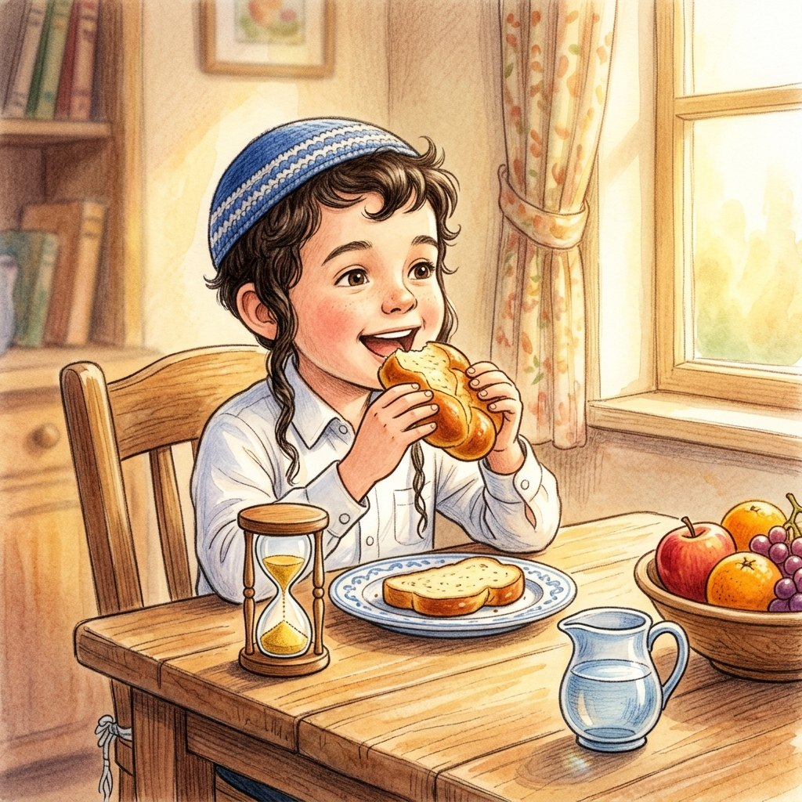

I've Got a Clue!
How Long May We Wait Between the Bracha and Eating?
About this episode: Yedani made a bracha on an apple at recess, saw the Rav, and started telling him all about the class trip. Only then did he remember that he hadn't taken a single bite! When do we need to make the bracha again, and when is it okay to pause?
0:00
--:--
We couldn't load the recording. Check your internet connection and try again.